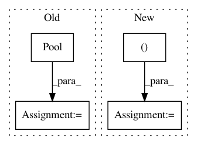

3c0483bd26e0bb7654472c514c0b2106906ca050,features/eolearn/features/doubly_logistic_approximation.py,DoublyLogisticApproximationTask,execute,#DoublyLogisticApproximationTask#Any#,57
Before Change
valid_parameters.append((times[valid_data_mask[:, ih, iw].squeeze()],
data[:, ih, iw][valid_data_mask[:, ih, iw].squeeze()]))
pool = multiprocessing.Pool(processes=multiprocessing.cpu_count())
all_parameters = pool.map(self._pool_wrapper, valid_parameters)
all_parameters = np.reshape(all_parameters, (h, w, 7))
eopatch.data_timeless[self.new_feature] = all_parameters
After Change
all_parameters = np.zeros((height, width, 7))
for height_ind, width_ind in it.product(range(height), range(width)):
valid_curve = data[:, height_ind, width_ind][valid_data_mask[:, height_ind, width_ind].squeeze()]
valid_times = times[valid_data_mask[:, height_ind, width_ind].squeeze()]
all_parameters[height_ind, width_ind] = self._fit_optimize(valid_times, valid_curve)
eopatch.data_timeless[self.new_feature] = all_parameters
return eopatch
In pattern: SUPERPATTERN
Frequency: 4
Non-data size: 4
Instances
Project Name: sentinel-hub/eo-learn
Commit Name: 3c0483bd26e0bb7654472c514c0b2106906ca050
Time: 2019-10-15
Author: benosircelj@gmail.com
File Name: features/eolearn/features/doubly_logistic_approximation.py
Class Name: DoublyLogisticApproximationTask
Method Name: execute
Project Name: Pinafore/qb
Commit Name: 166cb2c804d081401f0efb52745d214fa633fae1
Time: 2017-04-13
Author: ski.rodriguez@gmail.com
File Name: qanta/guesser/elasticsearch.py
Class Name: ElasticSearchGuesser
Method Name: guess
Project Name: deepchem/deepchem
Commit Name: 3b3a06ad8402079c2d18718349d5f0f212ac7b81
Time: 2020-12-11
Author: nfrey213@gmail.com
File Name: deepchem/feat/base_classes.py
Class Name: ComplexFeaturizer
Method Name: featurize
Project Name: HazyResearch/fonduer
Commit Name: 1c0cd03712f95fb5966968abc2a39313175594c6
Time: 2018-09-07
Author: jrausch@inf.ethz.ch
File Name: src/fonduer/utils/udf.py
Class Name: UDFRunner
Method Name: apply_mt